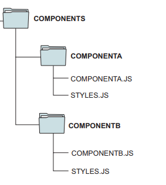
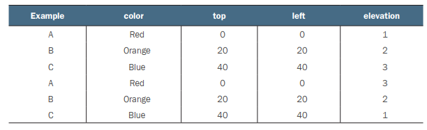
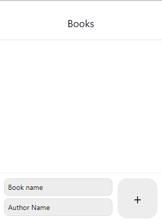

Bài 2: Xây dựng giao diện ứng dụng với React Native
Nội dung bài học
I. Sử dụng kiểu (Styles)
Một phần quan trọng trong ứng dụng di động nói chung hay ứng dụng trong React Native nói riêng là thiết kế giao diện (UI). Tương tự CSS trong thiết kế giao diện trang web, kiểu (styles) trong React Native được sử dụng trong thiết kế giao diện các component. Trong phần này chúng ta sẽ tìm hiểu tổng quan, cách tổ chức, cách áp dụng các component kiểu (styling componens) trong ứng dụng React Native.
Kiểu (Styles)
Với React Native, chúng ta tạo kiểu cho ứng dụng của mình bằng JavaScript. Tất cả các component cốt lõi chấp nhận một thuộc tính có tên là style. Các tên và giá trị kiểu tương tự với cách CSS hoạt động trên web, ngoại trừ các tên được viết bằng cách sử dụng cách viết hoa camelCase, ví dụ: thuộc tính màu nền trong sẽ được viết là backgroundColor chứ không phải background-color như trong CSS.
Thuộc tính style có thể là một đối tượng JavaScript và chúng ta sẽ sử dụng dạng style này trong các ví dụ minh họa. Khi một component ngày càng phức tạp, phương thức StyleSheet.create được ưu tiên sử dụng để định nghĩa các style tại một vị trí nào đó, điều này giúp mã trở nên gọn gàng hơn.
Áp dụng kiểu trong ứng dụng
Kiểu có thể được áp dụng trực tiếp đến các component dùng thuộc tính style (hình thức áp dụng nội tuyến – inline) như ví dụ sau:
Chúng ta áp dụng trực tiếp các định nghĩa kiểu marginLeft: 20, marginTop: 20 đến component View và các định nghĩa kiểu fontSize: 18, color: 'red' đến component Text thông qua thuộc tính style.
Một cách áp dụng kiểu khác là định nghĩa biến kiểu dùng phương thức StyleSheet.create như sau:
Có thể thấy, các kiểu như container, message, warning được định nghĩa tương tự đối tượng (object) trong JavaScript.
Các kiểu được áp dụng bằng cách tham chiếu đến biến styles thông qua dấu chấm, ví dụ styles.container. Nếu áp dụng nhiều kiểu cùng lúc, có thể sử dụng cấu trúc mảng chứa các tham chiếu đến biến styles, ví dụ [styles.message, styles.warning]
Tổ chức kiểu trong ứng dụng
Kiểu trong ứng dụng React Native có thể được tổ chức theo 2 cách:
Khai báo trong cùng tập tin với component (như các ví dụ trên): Lợi ích chính của cách này là component và các kiểu của nó được gói gọn hoàn toàn trong một tập tin. Component này sau đó có thể được di chuyển hoặc sử dụng ở bất cứ đâu trong ứng dụng. Đây là một cách tiếp cận phổ biến đối trong thiết kế component từ cộng đồng React Native.
Khai báo trong tập tin riêng: Hình sau đây minh họa cách tổ chức này
Thư mục COMPONENTA chứa một tập tin định nghĩa component (COMPONENTA.JS) và tập tin khai báo kiểu cho component này (STYLES.JS). Tương tự thư mục COMPONENTB chứa một tập tin định nghĩa component (COMPONENTB.JS) và tập tin khai báo kiểu cho component này (STYLES.JS).
Ví dụ trong thư mục components tạo một tập tin tên styles.js chứa nội dung sau:
Chúng ta sẽ áp dụng các kiểu từ tập tin styles.js đến component, trong App.js viết lại nội dung sau:
Chúng ta đã làm quen với kiểu, cách áp dụng, tổ chức. Sau đây chúng ta sẽ đi vào chi tiết cách áp dụng kiểu đến các component trong React Native.
Áp dụng kiểu đến các component
View
Với các View component, chúng ta sẽ áp dụng các kiểu dựa trên các khía cạnh sau:
Màu nền (Background color)
Áp dụng kiểu màu nền bằng cách sử dụng thuộc tính backgroundColor. React Native hỗ trợ một số định dạng màu như rgb, alpha, hue, saturation, lightness như bảng sau:
Ví dụ:
Chúng ta có hai View lồng nhau
View bên ngoài tham chiếu kiểu container và View bên trong tham chiếu kiểu cardContainer. Các kiểu như sau:
container dùng flexbox để kiểm soát layout của View, cardContainer thiết lập chiều cao, chiều rộng và màu nền của View.
Viền (Border)
Một trong những thành phần quan trọng của các View component là viền. Các thuộc tính cho kiểu viền bao gồm borderColor (Màu viền), borderStyle (Kiểu viền), borderWidth (Kích cỡ viền), borderRadius (Bo góc viền). Màu và kích cỡ viền có những thuộc tính tương ứng bên trái (left), phải (right), trên (top) và dưới (bottom) của View component bao gồm: borderTopColor, borderRightColor, borderBottomColor, borderLeftColor, borderTopWidth, borderRightWidth, borderBottomWidth, và borderLeftWidth. Bo viền cũng tương tự với các thuộc tính borderTopRightRadius, borderBottomRightRadius, borderBottomLeftRadius, and borderTopLeftRadius. Và chỉ có duy nhất một borderStyle.
Ví dụ 1: Tạo các kiểu khung viền
View Example đầu tiên chúng ta thiết lập giá trị borderWidth đến 1
Example tiếp theo, thiết lập giá trị borderWidth đến 3, xóa viền trái (left border) và thiết lập borderLeftWidth đến 0
Example thứ 3, thiết lập giá trị borderWidth đến 3, thiết lập màu đỏ đến viền trái (left border)
Example thứ 4, thiết lập chỉ viền trái với giá trị borderWidth là 3
Example cuối cùng, thiết lập chỉ viền với giá trị borderWidth là 1 và kiểu viền borderStyle đến dash (mặc định là solid)
Component Example có thể tái sử dụng với một bộ kiểu mặc định có thể dễ dàng ghi đè bằng cách chuyển vào các thuộc tính kiểu:
Ví dụ 2: dùng borderRadius để tạo các hình dạng
Example 1 là một hình vuông với 4 góc bo tròn.Lưu ý vì dùng mã JavaScript nên khi dùng các ký tự đặc biệt như \n để xuống dòng phải đặt trong cặp ngoặc {}
Example 2 là một hình vuông với 2 góc phải bo tròn.
Example 3 là một hình vuông với 2 góc đối diện bo tròn.
Example 4 là một hình vuông với đường viền bán kính bằng nửa độ dài cạnh.
Component CenteredText tái sử dụng để kết xuất các View văn bản đến giữa view cha (Example)
Component này sử dụng kiểu centeredText:
Layout View tổng quát của ứng dụng sử dụng Flexbox (Chúng ta sẽ tìm hiểu về layout này ở mục bên dưới)
Ví dụ 3: thêm viền đến Profile Card
Chú ý cần thêm component Image đến ứng dụng.
padding, margin
Margin và padding có ý nghĩa tương tự trong CSS. Hình ảnh sau mô tả ý nghĩa của margin và padding:
Các thuộc tính liên quan đến margin gồm: margin, marginTop, marginRight, marginBottom, và marginLeft. Các thuộc tính liên quan đến padding gồm: padding, paddingLeft, paddingRight, paddingTop, và paddingBottom.
Ví dụ 1: sử dụng margin
Kết quả trên nền Web và iOS:
Trên iOS và Android có một chút khác biệt về margin:
Sự khác biệt trong trường hợp này là D với giá trị marginLeft và marginTop là âm: iOS hiển thị khi giá trị margin là âm trong khi đó Android sẽ cắt bỏ một phần bởi component cha.
Ví dụ 2: sử dụng padding
Kết quả:
Tương tự margin, có một sự khác biệt giữa iOS và Android
Vị trí (Position)
Trong CSS có thuộc tính position cho phép chúng ta định vị các thành phần trên trang web đến bất kỳ vị trí mong muốn nào và trong React Native cũng có thuộc tính kiểu position với tính năng tương tự.
Trong CSS có các giá trị khác nhưng trong React Native, giá trị của position là absolute (tuyệt đối) và relative (tương đối). Theo mặc định, tất cả các phần tử được sắp xếp tương đối (relative) với nhau. Nếu postion được đặt thành absolute, thì phần tử được sắp xếp tương đối với phần tử cha. Khi dùng position có giá trị là absolute, các thuộc tính đi kèm theo là top, bottom, left và right.
Ví dụ : sử dụng position
Một ví dụ hiển thị các khối A, B và C được bố trí tương đối với nhau. Khối D có vị trí tuyệt đối (absolute) tại right: 0 và bottom : 0. Khối E cũng có vị trí tuyệt đối tại right: 0 và bottom: 0, nhưng cha của nó là khối B chứ không phải vùng chứa chính (container), trong khi cha của D là vùng chứa chính.
Text
Các component văn bản (Text) thường đi kèm các thuộc tính kiều liên quan:
- color: màu chữ
- fontFamily: thiết lập font chữ. Chi tiết tham khảo tại https://github.com/react-native-training/react-native-fonts
- fontSize: thiết lập kích cỡ chữ. Cỡ chữ mặc định là 14.
- fontStyle: thiết lập sự in nghiêng của chữ. Gồm 2 giá trị là normal (mặc định) và italic.
- fontWeight: thiết lập sự tô đậm của chữ. Các giá trị normal, bold, '100', '200', '300', '400', '500', '600', '700', '800', và '900'
Ví dụ
Trên iOS và Android có sự khác biệt

Ví dụ trên chúng ta cần chú ý một số vấn đề:
- import component Platform, Text từ React Naitive.
- Platform.OS cung cấp thông tin về nền tảng (Web, iOS hay Android) đang chạy ứng dụng.
- Dùng Platform.select để định dạng kiểu trên các nền tảng khác nhau:
Không chỉ có phông chữ hay màu chữ, React Native hỗ trợ các kiểu định dạng khác:
- lineHeight: Chiều cao văn bản. Ví dụ: lineHeight: 100
- textAlign: Căn lề văn bản theo chiều ngang. Các giá trị bao gồm: 'auto', 'center', 'right', 'left', và 'justify' ('justify' chỉ dùng cho iOS).
- textDecorationLine: Thêm các đường thẳng gạch dưới (underline) hay xuyên qua (line through) văn bản. Các giá trị bao gồm: 'none', 'underline', 'linethrough', và 'underline line-through'.
- textDecorationColor: Chỉ dành riêng cho iOS. Định dạng màu cho textDecorationLine.
- textDecorationStyle: Chỉ dành riêng cho iOS. Định dạng kiểu cho textDecorationLine với các giá trị: 'solid', 'double', 'dotted', và 'dashed'
- textShadowColor, textShadowOffset, và textShadowRadius: Thêm bóng đến văn bản dựa trên màu, offset và bán kính.
- letterSpacing: Chỉ dành cho iOS. Xác định khoảng cách giữa các ký tự.
Ví dụ:
Kết quả trên iOS và Android có một vài khác biệt:
Kiểu (style) và kích thước (size) theo nền tảng
Chúng ta không viết mã cho một thiết bị duy nhất; chúng ta thậm chí không viết mã cho một hệ điều hành duy nhất. Cái hay của React Native là chúng ta đang sử dụng JavaScript để tạo các ứng dụng có thể chạy trên cả iOS và Android. Nếu chúng ta xem qua tài liệu về React Native, chúng ta sẽ thấy nhiều thành phần có hậu tố là IOS hoặc Android, chẳng hạn như ProgressBarAndroid, ProgressViewIOS và ToolbarAndroid, vì vậy không có gì ngạc nhiên khi kiểu (style) và kích thước (size) cũng phụ thuộc vào các nền tảng.
Các đơn vị kích thước cơ bản
Pixel, px hay có khi gọi là pel (xuất phát từ "picture element"), chúng ta hay gọi là điểm ảnh, có dạng hình vuông.
Một hình ảnh bitmap mà chúng ta thấy trên màn hình là ma trận hai chiều (2D) của các pixel tạo nên (hay ma trận của các hình vuông nhỏ). Mỗi pixel chiếm 1 vị trí trong ma trận và chứa 1 phần của hình ảnh hiển thị. Mỗi pixel chứa 1 màu duy nhất được phối hợp từ 3 màu cơ bản Red, Green, Blue.
Pixel thường được dùng để nói về độ phân giải (resolution) của thiết bị.
Ví dụ: Samsung Galaxy S3 có màn hình độ phân giải 1280×720 (Height x Width). Điều này có nghĩa là chiều cao của màn hình Galaxy S3 là 1280 pixels, còn chiều rộng là 720 pixels.
Thiết bị có độ phân giải càng cao thì màn hình càng có nhiều pixels. Tuy nhiên điều này chưa nói lên được là màn hình sẽ hiển thị ảnh mịn, đẹp hay không. Điều này tùy thuộc vào diện tích của màn hình, vì vậy pixel không dùng làm đơn vị đo lường kích thước của màn hình thiết bị, nhưng lại được dùng để đo kích thước của ảnh.
dp, hay dip hay Density-independent Pixels, có khi được gọi là Device-independent Pixels
Đây là một đơn vị đo chiều dài vật lý cũng giống như inch, cm, mm... mà Google thường áp dụng để đo kích thước màn hình của thiết bị. (Bên iOS dùng pt hay point có khái niệm tương tự với dp – xem bên dưới)
- 160 dp = 1 inch – điều này có nghĩa 1dp = 1/160 = 0.00625 inch
- 1 dp có thể chứa 1 hay nhiều pixel.
DPI – Dots per inch hay PPI – Pixels per inch: là số điểm ảnh (pixels) trên 1 inch của màn hình thiết bị, con số này càng lớn thì màn hình thiết bị hiển thị hình ảnh càng mịn và đẹp.
Lưu ý dp hay dip không được nhầm lẫn với dpi (dots per inch).
Dựa vào dpi người ta chia làm loại màn hình như sau:
- small: ldpi (120dpi)
- normal: mdpi (160dpi)
- large: hdpi (240dpi)
- x-large: xhdpi (320dpi).
Với mỗi loại này thì 1 dp tương ứng với số lượng pixels khác nhau, được tính theo công thức:
px = dp * (dpi / 160)
Ví dụ với thiết bị có dpi là 320 thì với 10 dp ta có: 10 * (320/160) = 20 px, 1 dp tương đương 2 px.
PT viết tắt của Point, khái niệm pt tương tự như dp là một đơn vị đo kích thước thực, nhưng khác với dp:
- 1 pt = 1/72 inch, trong khi 1 dp = 1/160 inch
- pt thường được dùng trong lập trình iOS.
SP – Scale-independent Pixels: Cũng tương tự như dp, nhưng sp thường được dùng cho font size của văn bản.
Tạo bóng đổ (Drop Shadow)
Chúng ta có thể tạo hiệu ứng bóng đổ cho các component dùng thuộc tính kiều ShadowPropTypesIOS (cho iOS) và Elevation (Android).
Thuộc tính ShadowPropTypesIOS thường đi kèm với các thuộc tính shadowOffset, shadowColor, shadowOpacity, shadowRadius, width, height. Ví dụ sau đây sử dụng ShadowPropTypesIOS với các thuộc tính và giá trị áp dụng cho các View Example 1, 2, 3,...

Kết quả
Tương ứng với thuộc tính ShadowPropTypesIOS trong iOS, thuộc tính elevation được dùng để tạo bóng đổ trong Android thường đi kèm các thuộc tính color, top, left, elevation. Ví dụ sau đây sử dụng elevation với các thuộc tính và giá trị áp dụng cho các View Example A, B, C,...
Kết quả khi hiển thị trên iOS và Android:
Trên iOS, elevation bị bỏ qua; tất cả các thành phần giữ nguyên z-order, vì vậy bất kỳ thành phần nào nằm cuối cùng trong bố cục đều ở trên cùng. Trên Android, elevation được sử dụng và z-order được thay đổi; trong ví dụ thứ hai, elevation được đảo ngược, A ở trên cùng.
Sử dụng các phép biến đổi (transformations) để di chuyển (move), xoay (rotate), chia tỷ lệ (scale) và nghiêng (skew) các component
React Native cung cấp thuộc tính transform cho phép chúng ta áp dụng các phép biến đổi để di chuyển component từ vị trí này đến vị trí khác, xoay, chia tỷ lệ hay nghiêng component theo các trục.
transform là một mảng chứa các thuộc tính tương ứng với các phép biến đổi như sau:
perspective: cung cấp cho một phần tử không gian 3D bằng cách ảnh hưởng đến khoảng cách giữa mặt phẳng z và người dùng.
translateX và translateY: dịch chuyển một phần tử dọc theo trục x (translateX) hoặc trục y (translateY) từ vị trí hiện tại.
rotateX, rotateY, và rotateZ (rotate): quay một phần tử theo trục x (rotateX), trục y (rotateY) hay trục z (rotateZ). Hình ảnh chiều quay âm và dương theo các trục:
Xoay hình vuông 100 × 100 quanh trục x theo gia số 35°. Sau 90°, có thể nhìn thấy nhãn "ROTATION" xuyên qua phần tử, lộn ngược
Xoay hình vuông 100 × 100 theo trục y theo gia số 35°. Sau 90°, nhãn "ROTATION" có thể được nhìn thấy thông qua phần tử, phía sau
Xoay hình vuông 100 × 100 quanh trục z theo gia số của 35°. Vòng quay dương theo chiều kim đồng hồ và vòng quay âm là ngược chiều kim đồng hồ
scale, scaleX, và scaleY: scale nhân kích thước của phần tử với số được truyền cho nó, giá trị mặc định là 1. Để làm cho một phần tử xuất hiện lớn hơn, hãy chuyển một giá trị lớn hơn 1; để làm cho nó xuất hiện nhỏ hơn, chuyển một giá trị nhỏ hơn 1. Phần tử cũng có thể được chia tỷ lệ dọc theo một trục bằng cách sử dụng scaleX hoặc scaleY. scaleX kéo dài phần tử theo chiều ngang dọc theo trục x và scaleY kéo dài phần tử thẳng đứng dọc theo trục y. Xét ví dụ áp dụng scale cho các hình vuông A, B, C, D, E có cùng kích thước:
Tất cả các hình vuông bắt đầu có cùng kích thước và hình dạng như A, có tỷ lệ mặc định là 1. B thay đổi tỷ lệ hình vuông theo 0.5 và kết quả là thu nhỏ hình vuông một nửa. C thay đổi tỷ lệ hình vuông theo 2, kết quả là phóng to nó lên gấp đôi. D được kéo dài theo trục x gấp 3 lần. E được kéo dài theo trục y gấp 1.5 lần.
Mã chương trình minh họa:
skewX và skewY: Thuộc tính skewX làm nghiêng một phần tử dọc theo trục x. Tương tự, thuộc tính skewY làm nghiêng một phần tử dọc theo trục y. Ví dụ như hình sau:
Hình vuông A không có phép biến đổi nào được áp dụng cho nó. Hình vuông B bị nghiêng dọc theo trục x 45°. Hình vuông C bị nghiêng dọc theo trục x một góc –45°. Hình vuông D bị nghiêng dọc theo trục y một góc 45°. Hình vuông E bị nghiêng dọc theo trục y một góc –45°.
Mã nguồn
Tạo bố cục các component dùng Flexbox
React Native cung cấp các thuộc tính cho phép chúng ta tạo các layout (bố cục) flexbox bao gồm: flex, flexDirection, justifyContent, alignItems, alignSelf, và flexWrap. Chúng ta sẽ lần lượt tìm hiểu qua các thuộc tính và ví dụ.
flex
Thuộc tính flex cho phép một thành phần thay đổi kích thước của nó để lấp đầy không gian của vùng chứa mà nó ở trong. Ví dụ minh họa dùng flex
Kết quả:
A, B có cùng tỉ lệ (1/2) trong không gian cha; C có tỉ lệ 1/3, D là 2/3; E là 1/4, F là 3/4.
flexDirection
Sử dụng thuộc tính flexDirection, chúng ta có thể thay đổi trục chính của bố cục và do đó thay đổi hướng của bố cục. Có hai giá trị cho flexDirection là row và column (mặc định). Ví dụ thay đổi hướng của các thành phần A, B,... từ ví dụ thuộc tính flex với giá trị row:
Kết quả:
justifyContent
Thuộc tính này định nghĩa cách không gian được sử dụng xung quanh một component. Các giá trị của justifyContent gồm:
- center: căn giữa các thành phần con trong vùng cha
- flex-start: nhóm các thành phần ở đầu cột flex hoặc hàng, tùy thuộc vào giá trị nào được gán cho flexDirection.
- flex-end: nhóm các thành phần ở cuối cột flex hoặc hàng, tùy thuộc vào giá trị nào được gán cho flexDirection.
- space-around: cố gắng phân bổ đều không gian xung quanh mỗi phần tử.
- space-between: không áp dụng khoảng cách ở đầu hoặc cuối vùng chứa.
Xét đoạn mã ví dụ sau:
Kết quả
alignItems
Thuộc tính này căn chỉnh các thành phần con trong một thành phần cha. Giá trị alignItems bao gồm stretch, center, flex-start, và flex-end. Ví dụ áp dụng alignItems
Kết quả
alignSelf
Chúng ta có thể ghi đè căn chỉnh của vùng chứa cha bằng alignSelf. Về bản chất, alignSelf cung cấp khả năng ghi đè bất kỳ căn chỉnh nào đã được đặt trên vùng chứa cha, vì vậy một đối tượng con có thể được căn chỉnh độc lập với các đối tượng anh em của nó (cùng một vùng chứa cha). Các giá trị cho alignSelf bao gồm auto, stretch, center, flexstart, và flex-end. Chương trình minh họa
flexWrap
Thuộc tính này nhận hai giá trị là nowrap và wrap. Giá trị mặc định là nowrap, nghĩa là các mục sẽ tràn ra khỏi màn hình nếu chúng không vừa. Các mục được cắt bớt và người dùng không thể nhìn thấy chúng. Để khắc phục sự cố này, hãy sử dụng giá trị wrap. Chương trình minh họa
Kết quả
Ở màn hình này không có gì đặc biệt xảy ra, nhưng nếu chúng ta thu nhỏ màn hình lại sẽ như sau:
Ai từng học qua Excel cũng có trải nghiệm tương tự với việc xử lý dữ liệu tương ứng với kích thước theo ô.
II. Thành phần điều hướng (Navigation)
Khung React Native không bao gồm thư viện điều hướng. Khi xây dựng điều hướng trong ứng dụng React Native, chúng ta phải sử dụng thư viện điều hướng của bên thứ ba. Một lựa chọn tốt được khuyên dùng bởi cộng đồng React Native là sử dụng React Navigation làm thư viện điều hướng để xây dựng ứng dụng Reac Native. Chi tiết về thư viện React Navigation tham khảo tại https://reactnavigation.org/docs/getting-started
Ba loại điều hướng chính điển hình cho các ứng dụng di động: kiểu tab, kiểu stack và kiểu drawer.
Kiểu Tab (Tab Navigation)
Điều hướng dựa trên Tab thường có các tab ở đầu (top) hoặc cuối (bottom) màn hình; nhấn một tab sẽ đưa bạn đến màn hình tương ứng với tab đó. Nhiều ứng dụng phổ biến như Twitter, sInstagram và Facebook triển khai loại điều hướng này trên các màn hình chính.
React Native hỗ trợ các kiểu Tab Navigation là Bottom Tabs, Material Bottom Tabs và Material Top Tabs.
Ở đây chúng ta sẽ minh họa dùng Material Top Tabs nên cần cài các thư viện từ React Navigation:
npm install @react-navigation/material-top-tabs react-native-tab-view
import các thư viện từ React Navigation
Khởi tạo Tab dùng hàm createMaterialTopTabNavigator()
Các View được bao xung quanh bởi NavigationContainer và Tab.Navigator
Chương trình hoàn chỉnh
Hiện tại chúng ta đang ở TAB-1. Nhấn Add New Tab sẽ xuất hiện TAB-2. Có thể chuyển đổi qua lại TAB-1 và TAB-2.
Chi tiết hơn về kiểu Tab tham khảo tại React Navigation Docs.
Kiểu Stack (Stack Navigation)
Điều hướng dựa trên Stack chuyển đổi từ màn hình này sang màn hình khác, thay thế màn hình hiện tại và thường triển khai một số loại chuyển đổi hoạt ảnh. Chúng ta có thể đi lùi hoặc tiếp tục di chuyển về phía trước trong Stack.
React Native hỗ trợ kiểu Stack và Native Stack.
Ở dây chúng ta minh họa dùng Stack nên cần cài các thư viện từ React Navigation:
npm install @react-navigation/stack
import các thư viện từ React Navigation
Khởi tạo Tab dùng hàm createStackNavigator()
Các View được bao xung quanh bởi NavigationContainer và Stack.Navigator
Chương trình hoàn chỉnh
Nhấn Conference, nhấn nút Back (<--) để trở lại màn hình chính. Tiếp tục nhấn nút Story và nhấn nút Back (<--) để trở lại màn hình chính.
Chi tiết hơn về các kiểu Stack tham khảo tại React Navigation Docs.
Kiểu Drawer (Drawer Navigation)
Điều hướng dựa trên Drawer thường là menu bên bật ra từ bên trái hoặc bên phải màn hình và hiển thị danh sách các tùy chọn. Khi nhấn một tùy chọn, menu đóng lại và chúng ta được đưa đến màn hình mới.
Để dùng Drawer, chúng ta cần cài các thư viện từ React Navigation
npm install @react-navigation/drawer
import các thư viện từ React Navigation
Khởi tạo Tab dùng hàm createDrawerNavigator()
Các View được bao xung quanh bởi NavigationContainer và Drawer.Navigator
Chương trình hoàn chỉnh
Nhấn vào Open Drawer sẽ xuất hiện menu bên trái màn hình, Chọn một tùy chọn, ví dụ Story, ứng dụng sẽ đóng menu và điều hướng đến màn hình Story.
Chi tiết hơn về các kiểu Drawer tham khảo tại React Navigation Docs.
III. Hiệu ứng động (Animations)
Một trong những điều tuyệt vời về React Native là khả năng dễ dàng tạo hoạt ảnh hay hiệu ứng động (animation) sử dụng Animated API. Hoạt ảnh thường được sử dụng để nâng cao giao diện người dùng và mang lại sống động hơn với thiết kế hiện có của ứng dụng.
Animated API
Animated API đi kèm với React Native, vì vậy để sử dụng nó, tất cả những gì chúng ta phải làm là import nó giống như bất kỳ API hoặc thành phần React Native nào khác. Khi tạo hoạt ảnh, luôn cần phải thực hiện 4 việc sau đây:
- Import Animated API từ React Native.
- Tạo một giá trị có thể hoạt ảnh bằng cách sử dụng Animated API.
- Gắn giá trị vào component tương tự kiểu (style).
- Viết hàm tạo hoạt ảnh.
Sau đây chúng ta sẽ khảo sát chi tiết một số kiểu hoạt ảnh hay hiệu ứng động được dùng trong các ứng dụng React Native.
Tạo hoạt ảnh đơn giản
Trong chương trình này chúng ta sẽ tạo một hoạt ảnh với margin trên của một hộp hình chữ nhật hay vuông. Mã chương trình
Nhấn nút ANIMATE BOX để xem hiệu ứng. Một số điều chúng ta đã thực hiện từ chương trình trên:
- Import Amimated API: import {...,Animated,...}
- Tạo một thuộc tính lớp gọi là marginTop và gán nó cho một giá trị hoạt ảnh, chuyển vào giá trị bắt đầu (ở đây là 20): marginTop = new Animated.Value(20);
- Tạo hàm hoạt ảnh: animate = () => {...}. Ví dụ này sử dụng hàm timing để tạo hiệu ứng động cho một giá trị. Hàm này có hai đối số: một giá trị bắt đầu và một đối tượng cấu hình. Đối tượng cấu hình được chuyển một toValue để đặt giá trị mà hoạt ảnh sẽ tạo hiệu ứng và duration là thời lượng mili giây của hoạt ảnh.
- Gắn hàm animate vào trình xử lý sự kiện onPress của Button để gọi nó khi người dùng nhấn Button.
- Dùng component Animated.View để tạo hình vuông thay vì các View thông thường.
Có 4 loại View chúng ta có thể tạo hoạt ảnh ngay lập tức là View, Image, ScrollView và Text.
Hoạt ảnh mở rộng ô nhập dữ liệu từ biểu mẫu (form)
Một ví dụ khác về việc sử dụng hoạt ảnh trong React Native là mở rộng ô nhập dữ liệu (component TextInput) từ một biều mẫu khi người dùng chọn ô đó. Đoạn mã chương trình:
Chọn ô nhập dữ liệu để xem hiệu ứng. Một số điều chúng ta đã thực hiện từ chương trình trên:
- Import Amimated API và TextInput: import {...,Animated, TextInput...}
- Tạo một thuộc tính lớp gọi là animatedWidth và gán nó cho một giá trị hoạt ảnh, chuyển vào giá trị bắt đầu (ở đây là 200): animatedWidth = new Animated.Value(200);
- Tạo hàm hoạt ảnh: animate = (value) => {...}. Ví dụ này sử dụng hàm timing để tạo hiệu ứng động cho một giá trị. Hàm này có hai đối số: một giá trị bắt đầu và một đối tượng cấu hình. Đối tượng cấu hình được chuyển một toValue để đặt giá trị mà hoạt ảnh sẽ tạo hiệu ứng và duration là thời lượng mili giây của hoạt ảnh.
- Gắn hàm animate vào trình xử lý sự kiện onBlur và onFocus của TextInput để gọi nó khi người dùng kích hoạt sự kiện tương ứng.
- Gắn giá trị animatedWidth đến Animated.View chứa TextInput.
Tạo hoạt ảnh loading
Rất nhiều lần, chúng ta cần tạo hoạt ảnh là các vòng lặp vô hạn, chẳng hạn như chỉ báo tải (loading indicator) hay chỉ báo hoạt động (activity indicator). Chương trình minh họa sau đây tạo một chỉ báo tải (loading indicator):
Một số chú ý từ đoạn chương trình trên:
- Import component Easing cho phép kiểm soát chuyển động của hoạt ảnh. Chương trình trên là kiểm soát độ mượt (smooth) của chuyển động quay tròn: import { Easing, Animated,...}
- Khởi tạo trạng thái (state) với một giá trị loading kiểu Boolean là true: state = { loading: true }
- Kích hoạt hoạt ảnh bằng cách gọi hàm this.animate và hàm setTimeout thiết lập giá trị tải thành false trong state sau 2 giây componentDidMount() { this.animate(); ... }
- Khởi tạo giá trị animationRotation ban đầu là 0: animatedRotation = new Animated.Value(0)
- Tạo một phương thức lớp animate chuyển hàm Animated.timing vào trong và được gọi từ hàm Animated.loop: animate = () => {...}. Chúng ta thiết lập toValue thành 1, duration thành 1800 và easing thành Easing.linear, để tạo ra một chuyển động quay mượt (smooth).
- Sử dụng giá trị animatedRotation để tạo giá trị xoay mới bằng phương thức interpolate: const rotation = this.animatedRotation.interpolate({...}). Chúng ta chuyển các giá trị bắt đầu (0) và kết thúc (1) trong InputRange; Chuyển các giá trị cho outputRange để inputRange ánh xạ tới: một giá trị ban đầu là 0 độ và giá trị cuối cùng là 360 độ, tạo ra góc xoay 360 độ đầy đủ.
- Kiểm tra xem giá trị của loading có là true không và phản hồi tương ứng: loading ? (...). Nếu loading là true, sẽ hiển thị chỉ báo tải xoay; nếu là false, hiển thị thông báo Welcome. Gán biến rotation vào rotate của thuộc tính kiểu transform của Animated.Image.
Tạo nhiều hoạt ảnh đồng thời
Thỉnh thoảng chúng ta cần tạo nhiều hoạt ảnh đồng thời. Animated API có phương thức lớp gọi là parallel nhận một mảng các hoạt ảnh để thực hiện cùng lúc.
Chương trình sau đây minh họa cách dùng parallel để thực hiện đồng thời 3 hoạt ảnh:
Trong chương trình trên chúng ta khởi tạo 3 giá trị hoạt ảnh: animatedTitle, animatedSubtitle và animatedButton.
Gọi hàm animate từ componentDidMount: componentDidMount() { this.animate(); }
Hàm animate gọi Animated.parallel và hàm này chuyển 3 hàm Animated.timing để kích hoạt 3 hoạt ảnh cùng lúc: animate = () => {...}
Đính kèm các giá trị hoạt ảnh đến các component Animated.Text, Animated.View.
Tạo một chuỗi hoạt ảnh (a animated sequence)
Một chuỗi hoạt ảnh là một loạt các hoạt ảnh diễn ra lần lượt, với mỗi hoạt ảnh chờ hoạt ảnh trước đó hoàn thành trước khi bắt đầu. Chúng ta có thể tạo một chuỗi hoạt ảnh với hàm sequence. Giống như hàm parallel, sequence nhận một mảng các hoạt ảnh.
Đoạn chương trình minh họa
Một cách tương tự các hiệu ứng hoạt ảnh trên, người học tự tìm hiều ý nghĩa các đoạn mã trong hoạt ảnh này.
Hoạt ảnh stagger (xếp (nan hoa) chéo cánh sẻ, xếp chữ chi)
Tạo hiệu ứng stagger chúng ta dùng hàm Animated.stagger. Tương tự parallel và sequence, stagger nhận một mảng các hoạt ảnh nhưng khác hai hàm kia, stagger có thêm tham số đầu chỉ thời gian bắt đầu hiệu ứng stagger. Đoạn chương trình minh họa
Khởi tạo mảng animatedValues chứa 1000 giá trị 0 (dùng for).
Tạo một mảng các hoạt ảnh Animated.timing tham chiếu đến các giá trị được tạo trong mảng animatedValues.
Gọi hàm Animated.stagger với thời gian bắt đầu là 15ms và mảng các hoạt ảnh.
IV. Sử dụng thư viện Redux
Khi xây dựng các ứng dụng React và React Native trong thế giới thực, chúng ta sẽ nhanh chóng biết rằng lớp dữ liệu có thể trở nên phức tạp và không thể quản lý được nếu nó không được xử lý một cách chính xác và có chủ ý. Một cách để xử lý dữ liệu là giữ nó trong trạng thái (state) component và chuyển nó đi khắp nơi như những props. Cách khác là sử dụng một mẫu hoặc thư viện kiến trúc dữ liệu. Phần này đề cập đến thư viện Redux: đó là phương pháp xử lý dữ liệu được áp dụng rộng rãi nhất trong hệ sinh thái React và nó được duy trì bởi Facebook, cùng một nhóm duy trì cả React và React Native.
Các khái niệm cơ bản trong Redux
Sau đây là một số khái niệm cơ bản trong Redux chúng ta cần nắm vững:
- Store (Kho chứa): Là một đối tượng lưu trữ trạng thái của ứng dụng. Nó được tạo ra bằng cách sử dụng hàm createStore từ Redux. Kho chứa cung cấp các phương thức để truy xuất trạng thái hiện tại, phát đi các hành động (actions) và theo dõi các thay đổi.
- Actions (Hành động): Là các đối tượng JavaScript đơn giản mô tả các thay đổi trong ứng dụng. Chúng được phát đi bằng cách sử dụng phương thức store.dispatch(). Hành động thường có thuộc tính type để chỉ định loại hành động đang được thực hiện.
- Reducers (Bộ giảm thiểu): Là các hàm thuần túy mô tả cách trạng thái của ứng dụng thay đổi dựa trên các hành động. Chúng nhận vào trạng thái hiện tại và một hành động, sau đó trả về một trạng thái mới. Reducers được kết hợp thành một reducer gốc bằng cách sử dụng hàm combineReducers từ Redux.
- Phát đi hành động (Dispatching Actions): Hành động được phát đi tới kho chứa bằng cách sử dụng phương thức store.dispatch(). Khi một hành động được phát đi, Redux gọi reducer gốc, từ đó gọi các reducer tương ứng để cập nhật trạng thái.
- Theo dõi các thay đổi (Subscribing to Changes): Các thành phần có thể đăng ký theo dõi các thay đổi trong kho chứa Redux bằng cách sử dụng phương thức store.subscribe() hoặc kết nối với Redux bằng các thư viện như react-redux. Điều này cho phép các thành phần nhận các cập nhật khi trạng thái thay đổi và tái render theo thích hợp. Bằng cách tuân thủ các nguyên tắc của Redux, bạn có thể duy trì sự phân tách rõ ràng giữa trạng thái và các thành phần giao diện người dùng của ứng dụng, giúp dễ dàng hiểu, kiểm tra và quản lý luồng trạng thái của ứng dụng.
Sử dụng Redux trong ứng dụng React Native
Sau đây là các bước cơ bản để sử dụng Redux trong ứng dụng React Native:
- Cài đặt Redux và React Redux
- Trong thư mục dự án của bạn, chạy lệnh sau để cài đặt Redux và React Redux: npm install redux react-redux
- Với Snack Expo sẽ có các bài thực hành mẫu (TodoApp, BookApp) bên dưới.
- Cài đặt các thư viện cần thiết cho Redux như redux, react-redux, và redux-thunk.
- Tạo một cấu trúc thư mục cho các tệp Redux của bạn, ví dụ: actions, reducers, và store.
- Trong thư mục actions, tạo các tệp hành động cho các chức năng của ứng dụng của bạn. Định nghĩa các loại hành động và người tạo hành động.
- Trong thư mục reducers, tạo các tệp reducer cho mỗi phần của trạng thái của ứng dụng của bạn. Xác định trạng thái ban đầu và xử lý các hành động.
- Sử dụng hàm combineReducers từ Redux để kết hợp các reducer của bạn thành một reducer gốc duy nhất.
- Trong thư mục store, tạo một tệp store.js. Nhập reducer gốc và tạo một Redux store bằng cách sử dụng createStore.
- Trong điểm vào của ứng dụng của bạn (thông thường là App.js), nhập Redux store và bao gói ứng dụng của bạn với thành phần Provider từ react-redux.
- Kết nối các thành phần cần truy cập đến Redux store bằng cách sử dụng hàm connect từ react-redux. Ánh xạ trạng thái và hành động thành props.
- Gửi (dispatch) các hành động từ các thành phần của bạn để cập nhật trạng thái trong Redux store.
- Sử dụng trạng thái từ Redux store trong các thành phần của bạn để truy cập dữ liệu của ứng dụng.
- Kiểm tra ứng dụng của bạn và đảm bảo Redux hoạt động đúng bằng cách xác minh rằng hành động được gửi, trạng thái được cập nhật và các thành phần nhận dữ liệu đã được cập nhật.
Tạo ứng dụng BookApp và TodoApp
Ứng dụng TodoApp
Giao diện ứng dụng

Nhập một công việc vào mục Enter a todo (ví dụ workout) và nhấn nút Add Todo
Xem chi tiết Hướng dẫn
Ứng dụng BookApp
Giao diện ứng dụng
Nhập tên cuốn sách vào Book name và tên tác giả vào Author Name
Nhấn nút +
Xóa cuốn sách bằng cách Nhấn nút Remove.
Xem chi tiết Hướng dẫn